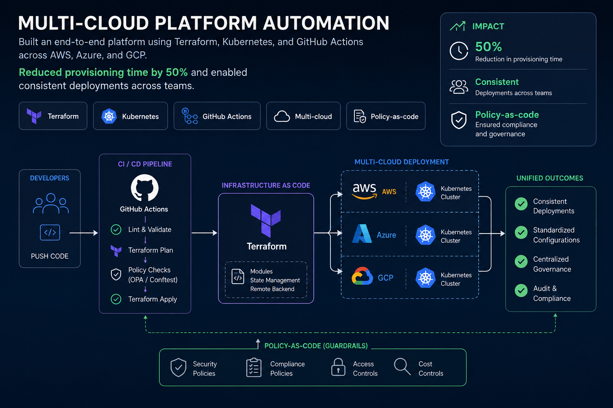
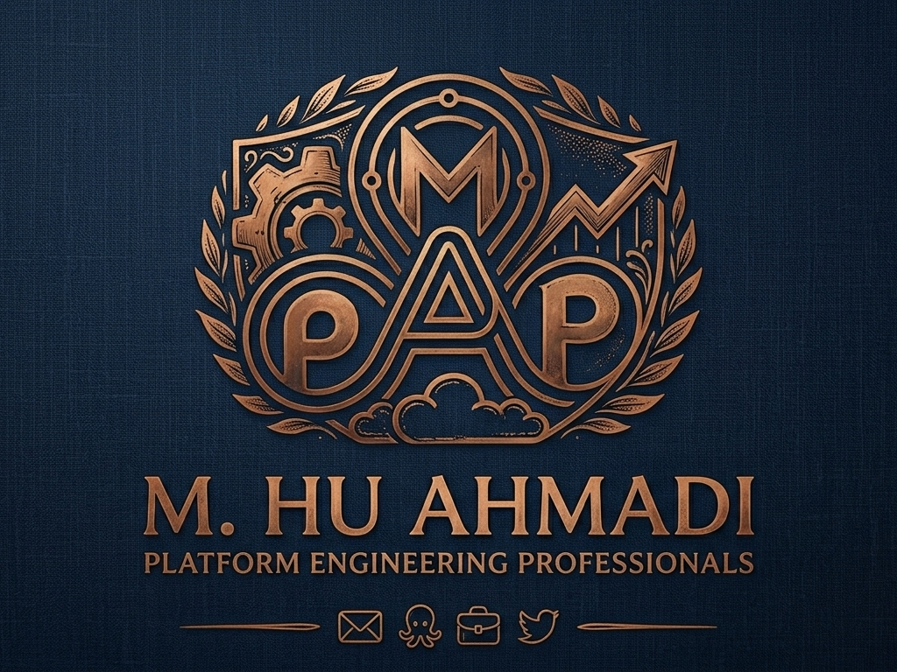
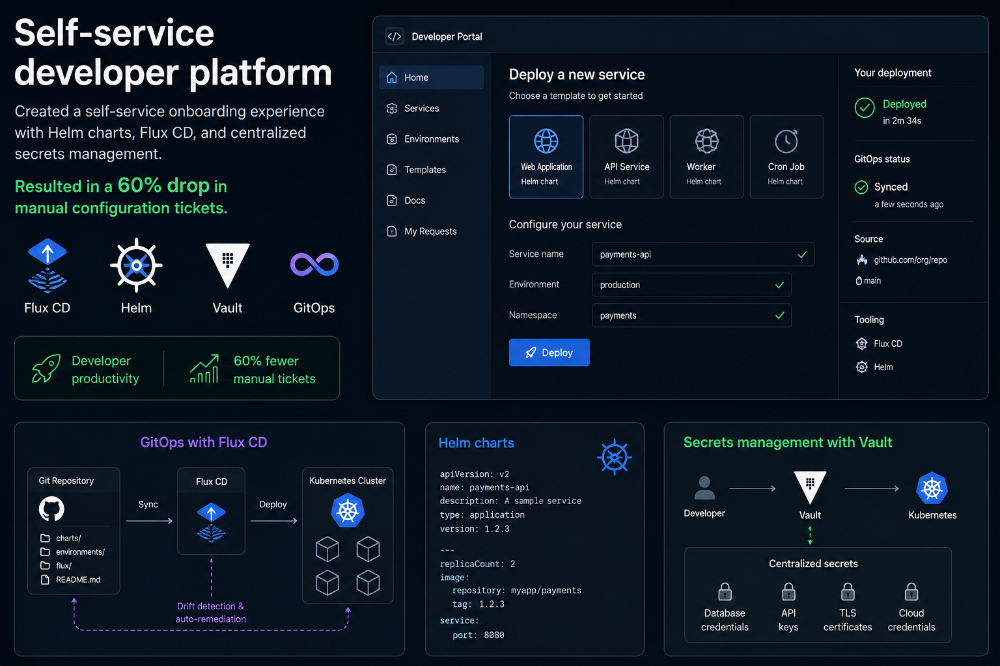
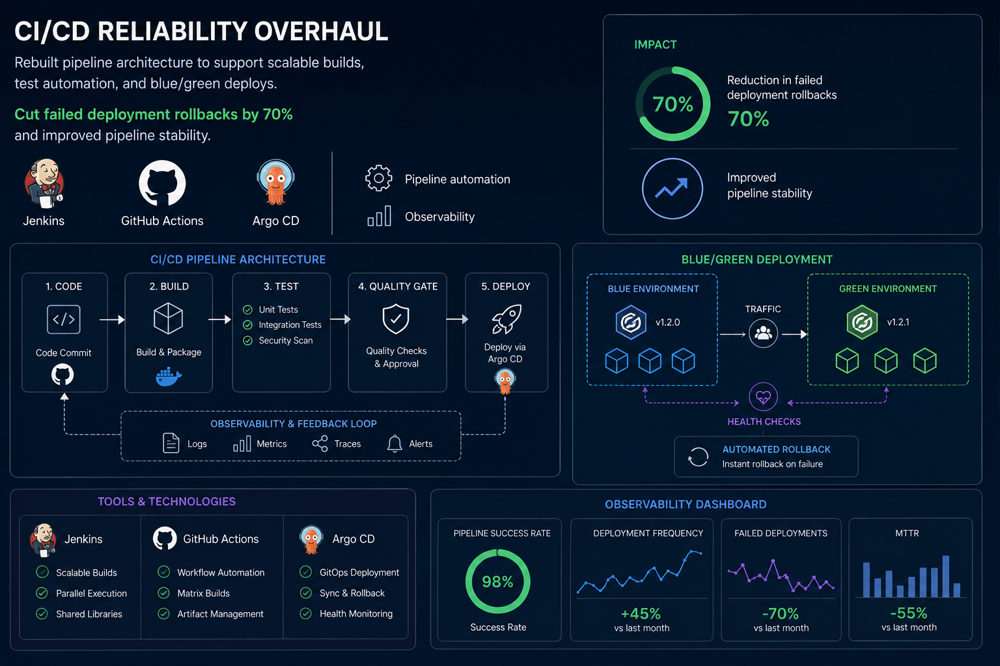

Multi-cloud platform automation
Built an end-to-end platform using Terraform, Kubernetes, and GitHub Actions across AWS, Azure, and GCP. Reduced provisioning time by 50% and enabled consistent deployments across teams.

Platform Engineering
Platform, DevOps & Cloud Infrastructure
I design platform services, automated CI/CD practices, and multi-cloud infrastructure so teams can ship software faster with confidence.
Projects

Built an end-to-end platform using Terraform, Kubernetes, and GitHub Actions across AWS, Azure, and GCP. Reduced provisioning time by 50% and enabled consistent deployments across teams.

Created a self-service onboarding experience with Helm charts, Flux CD, and centralized secrets management. Resulted in a 60% drop in manual configuration tickets.

Rebuilt pipeline architecture to support scalable builds, test automation, and blue/green deploys. Cut failed deployment rollbacks by 70% and improved pipeline stability.
Delivered centralized observability with Prometheus, Grafana, and PagerDuty integration. Improved mean-time-to-detect by 45% and elevated incident response readiness.
Skills
AWS, Azure, GCP, VPC, Networking, IAM
Terraform, Pulumi, ARM, CloudFormation, Terragrunt
GitHub Actions, Jenkins, Argo CD, Flux, Tekton
Kubernetes, Docker, EKS, AKS, GKE, service mesh
Prometheus, Grafana, ELK, Datadog, SLOs, PagerDuty
Policy-as-code, IAM controls, secrets management, compliance
Summary
I help organizations move from brittle infrastructure to predictable, cost-effective platforms. My focus is on automation, secure multi-cloud architecture, and observability so engineering teams can deliver value with lower risk.
Whether it’s designing a new platform, standardizing deployment pipelines, or improving incident response, I bring practical infrastructure engineering expertise paired with a builder mindset.
Contact
Send a message to begin a conversation about your infrastructure modernization goals, platform reliability needs, or team enablement challenges.